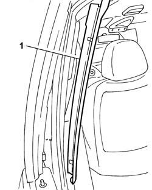
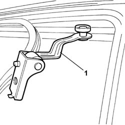
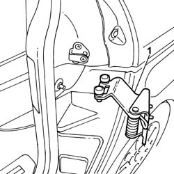
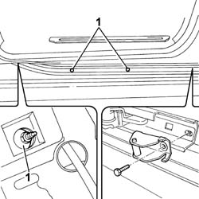
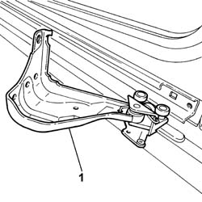
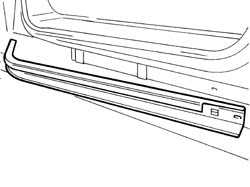

7020C16 SUPPORTING AND SLIDING ELEMENTS OF ONE SLIDING DOOR LEFT OR RIGHT R R
- Path
- Procedures > 70 FITTINGS > 7020 LOAD COMPARTMENT DOORS > 7020C SLIDING SIDE DOOR > 7020C16 SUPPORTING AND SLIDING ELEMENTS OF ONE SLIDING DOOR LEFT OR RIGHT R R
- Kind
- repair procedure (removal / refitting; the operation number is the code)
- Applies to
- all engines; all production periods
- Interactive page
- https://sloeber94.github.io/elrnDB-fUlss/en/#/179007705
Applies to: all engines; all production periods
 Removing
Removing
 Refitting
Refitting1. Release the pillar cover from the retaining clips and remove it.

Applies to: all engines; all production periods
Op. 7210E40 GLAZED SLIDING SIDE DOOR
-
- Move the door housing side trim sideways.

Applies to: all engines; all production periods
1. Remove the sliding side door rear sliding element.

Applies to: all engines; all production periods
1. Undo the bolts fixing the sliding side door lower sliding element.

Applies to: all engines; all production periods
1. Remove the sliding side door sliding element.

Applies to: all engines; all production periods
1. Remove the sliding side door lower support element.

Applies to: all engines; all production periods
Refitting
Removing- Fit the sliding side door sliding element.
- Tighten the bolts fixing the sliding side door lower sliding element to torque.
- Fit the sliding side door rear sliding element.
- Fit the sliding side door upper sliding element.
- Reposition the door housing side trim.
Op. 7210E40 GLAZED SLIDING SIDE DOOR
- Fit the front pillar trim.
- Attach the front pillar fastening clips.